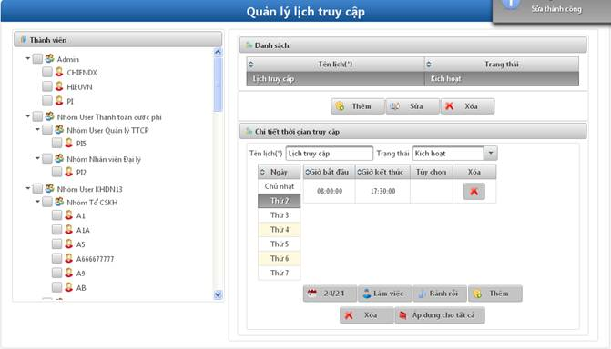

- Mục đích: Cho phép quản lý thời gian có thể truy cập vào hệ thống.
- Bước 1: Click vào Quản lý thời gian truy cập.

Hình 17: Màn hình quản lý thời gian truy cập
- Bước 2: Thực hiện các chức năng Thêm/Sửa/Xóa.
ü Mục đích: Cho phép quản lý thời gian truy cập vào hệ thống.
ü Bước 1: Click vào nút Thêm.
Hình 18: Màn hình thêm mới lịch truy cập
ü Bước 2: Nhập dữ liệu các trường.
§ Tên lịch: Cho phép khai báo tên lịch truy cập.
§ Trạng thái: Trạng thái áp dụng của lịch truy cập:
Ø Hiệu lực.
Ø Hết hiệu lực
§ Thứ tự: Thứ tự ưu tiên lịch truy cập.
§ Khai báo thời gian truy cập: Khai báo thời gian truy cập vào hệ thống cho từng ngày. Có thể chọn các khai báo mặc định sẵn:
Ø 24/24: Thời gian từ 00:00:00 đến 23:59:59. Có thể sửa xóa được.
Ø Làm việc: thời gian từ 08:00:00 đến 17:30. Có thể sửa xóa được.
Ø Rảnh rỗi: thời gian từ 00:00:00 đến 07:59:59 và 12:00:00 đến 13:30:00. Có thể sửa xóa trên mỗi bản ghi được.
Ø Áp dụng cho tất cả: Cho phép khai báo thời gian cho tất cả các ngày trong tuần.
§ Nút Xóa: Cho phép Xóa tất cả các lịch truy cập đã khai báo.
§ Thành viên: Cho phép cấu hình thời gian truy cập vào hệ thống cho các thành viên truy cập trong hệ thống.
ü Bước 3: Click vào nút Đồng ý.
ü Mục đích: Cho phép thực hiện sửa thời gian truy cập.
ü Bước 1: Click vào một bản ghi trong Danh sách lịch.
Hình 19: Màn hình sửa thời gian truy cập
ü Bước 2: Thực hiện sửa các thông tin (tương tự như trong Thêm thời gian truy cập).
ü Bước 3: Click vào nút Đồng ý.
ü Mục đích: Cho phép xóa lịch truy cập.
ü Bước 1: Click vào 1 bản ghi trong Danh sách lịch.
ü Bước 2: Hộp thoại xác nhận xóa được hiển thị.
ü Bước 3: Click vào nút ‘Có’ để xác nhận xóa.